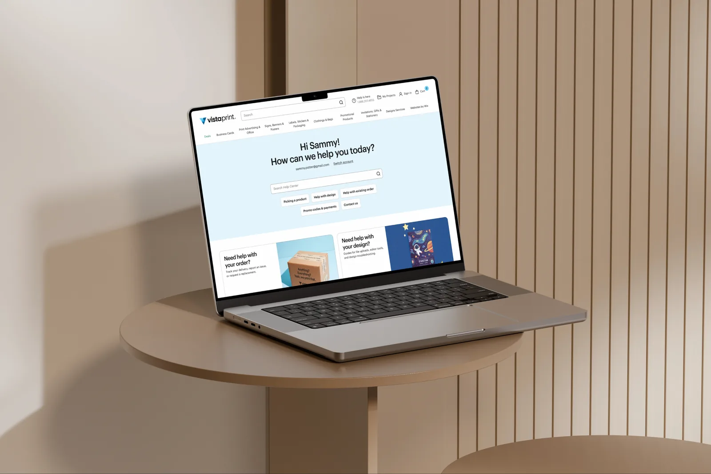
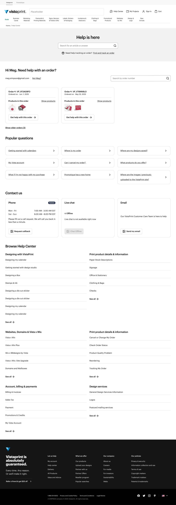
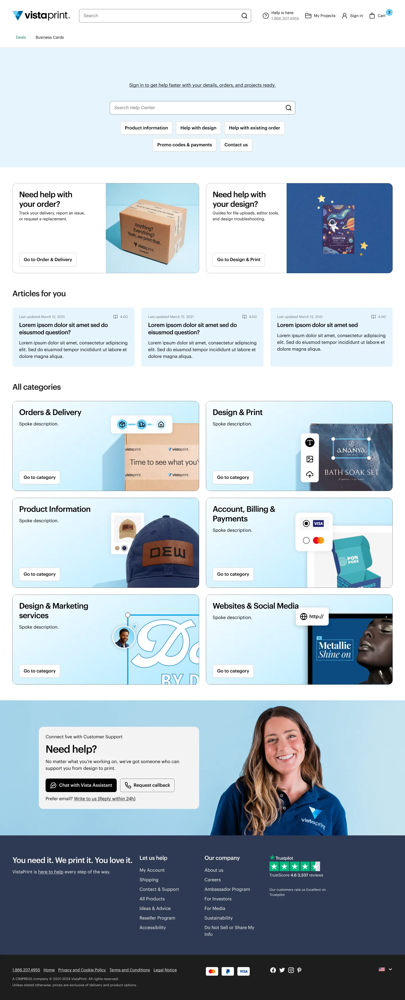
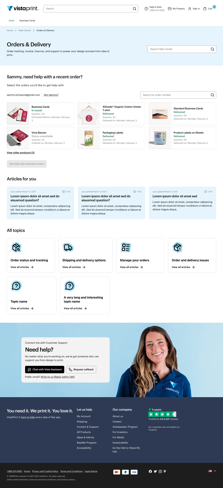
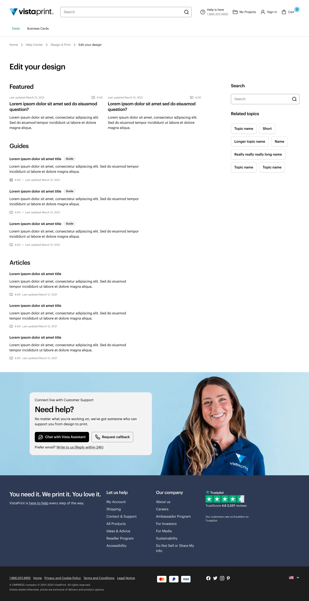
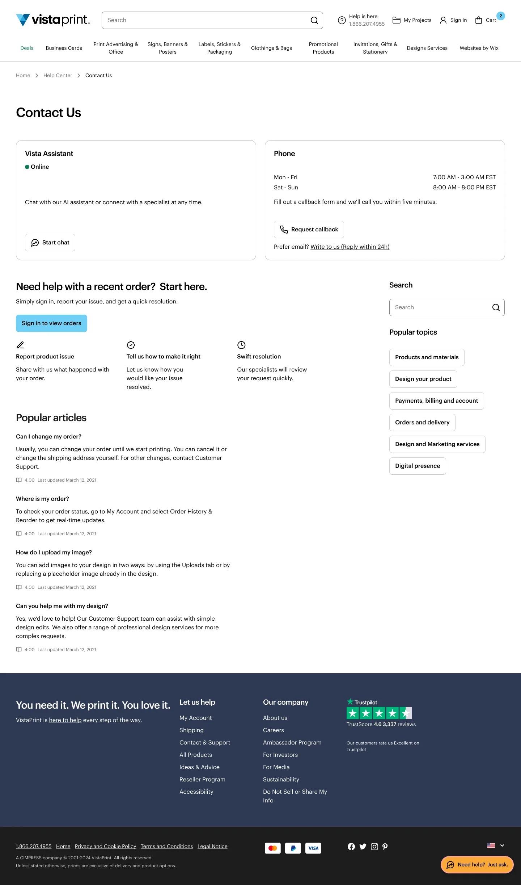

There's more to explore — here are two other projects worth your time.
The Help Center homepage is VistaPrint's main self-service entry point, but it was organised around internal content categories, and the path to contact was clearer than the path to an answer. Over 90 days (Feb–May 2026), 35.0% of homepage sessions ended in a contact and 34.8% dropped off with no action, so about 70% got no self-service value. Search was seen by 99.8% of visitors but used by around 5%, and 80% never reached the category section. Customer Support received ~1.1M inbound contacts in Feb–Apr 2026. The work was tied to a quarterly goal of growing article views from search, and to a content-platform migration that meant the content model and page design had to be designed together.
Own the UX workstream as part of the Product–Design–Engineering triad: discovery, information architecture, interaction design, prototyping, usability testing and developer handoff for the Help Center homepage, category and topic pages, search entry points and a dedicated Contact Us page. Deeper contact flows were out of scope and delivered separately.